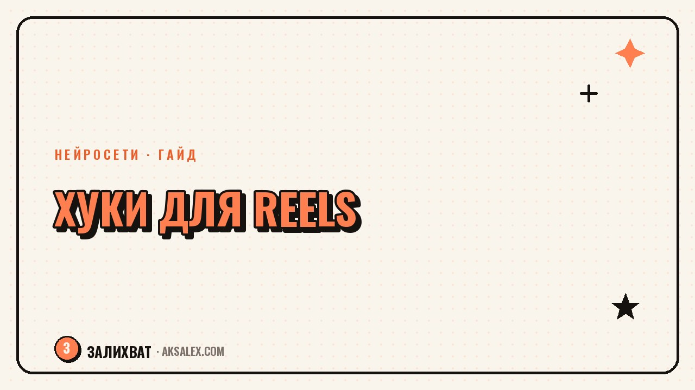

Как придумать цепляющий хук для Reels

Первые полторы-две секунды ролика решают, досмотрит человек его или пролистает дальше. Это и есть хук - фраза или кадр, которые цепляют внимание раньше, чем зритель успевает подумать «неинтересно». Хороший хук не спасёт слабый ролик целиком, но плохой хук убьёт даже сильный контент ещё до того, как до него дойдёт очередь.
Почему хук решает больше, чем кажется
Алгоритмы соцсетей считают удержание внимания в первые секунды одним из главных сигналов. Если люди массово уходят на второй секунде, ролик перестаёт получать показы - и дело не в теме, а именно в заходе.
Хук работает как заголовок статьи: он не должен объяснять всё содержание, его задача - заставить досмотреть следующие пять секунд. Дальше уже включается сам контент.
Из чего состоит сильный хук
Конфликт или неожиданность
Люди останавливаются на том, что ломает ожидание: «все делают так, а я делаю наоборот» работает лучше нейтрального «расскажу про...».
Конкретика вместо общих слов
«3 ошибки, которые я допускал полгода» цепляет сильнее, чем «расскажу про свои ошибки». Цифра и срок дают зрителю понятную рамку.
Обещание результата
Хук должен намекать, что зритель получит: решение проблемы, инсайт или готовую формулу. Без этого даже интригующая фраза быстро надоедает.
Формулы хуков с примерами
Вот несколько рабочих шаблонов, которые можно адаптировать под любую нишу.
| Формула | Пример |
|---|---|
| Ошибка + результат | Я месяц делал это неправильно - вот что изменилось, когда исправил |
| Вопрос от первого лица | Почему у меня не получалось набрать охваты полгода |
| Контраст ожиданий | Все советуют снимать каждый день, я снимаю раз в неделю |
| Цифра + срок | 3 инструмента, которые сэкономили мне 10 часов в неделю |
| Личное признание | Раньше я боялся показывать лицо в кадре - и вот что помогло |
Где искать сырьё для хуков
Самый быстрый источник - комментарии под своими и чужими роликами в нише: там уже сформулированы боли аудитории её же словами. Второй источник - личные ситуации, где что-то пошло не по плану. Именно провалы и неожиданные результаты дают самые живые заходы.
Хук, который звучит как реальная мысль человека, всегда сильнее хука, который звучит как реклама.
Нейросеть полезна на этапе, когда нужно быстро сгенерировать 10-15 вариантов по одной формуле - из них потом отбираются два-три, которые звучат естественно именно в твоём тоне.
Как тестировать хуки
- Снимай 2-3 варианта хука на один и тот же ролик и сравнивай удержание
- Смотри не только на просмотры, но и на процент досмотра первых трёх секунд
- Фиксируй формулы, которые сработали, в отдельную заметку - через месяц наберётся личная база
- Не меняй больше одной переменной за раз, иначе непонятно, что сработало
Частые ошибки в хуках
Самая частая ошибка - долгое вступление: приветствие, представление, разгон темы. Всё это стоит выбрасывать и начинать сразу с сути. Вторая ошибка - хук, не связанный с содержанием: он даёт просмотры, но обманывает ожидания, и люди уходят разочарованными до конца ролика.
Третья ошибка - использовать один и тот же хук во всех роликах подряд. Аудитория быстро считывает шаблон, и эффект новизны пропадает.
Частые вопросы
Сколько времени должен занимать хук?
Обычно 1-2 секунды на фразу или кадр. Дольше - и зритель успевает решить, что ролик ему не интересен.
Нужно ли произносить хук с эмоцией?
Да, тон голоса и мимика усиливают эффект не меньше самих слов. Ровная монотонная подача снижает удержание даже при сильном тексте.
Можно ли использовать один хук повторно?
Можно, но не подряд в нескольких роликах. Дай аудитории забыть формулу, прежде чем применять её снова.
Как понять, что хук не сработал?
Смотри на резкое падение удержания в первые секунды в статистике ролика. Если оно сильнее, чем обычно, дело в заходе, а не в теме.
Стоит ли писать хук заранее или импровизировать?
Лучше готовить заранее хотя бы 2-3 варианта. Импровизация на камеру часто получается длиннее и размытее, чем заготовленная фраза.
а не вручную